pacman::p_load(
tidyverse,
readxl,
scales,
gganimate,
showtext
)
library(showtext)
font_add_google("Cabin Sketch", "Cabin Sketch")
font_add_google("DM Sans", "DM Sans")
showtext_auto()Take Home Exercise 1
1 Overview
1.1 Background
Motor insurance portfolios contain heterogeneous variables including policyholder demographics, vehicle characteristics, premium amounts, exposure periods, and claims outcomes. Understanding how these variables interact is essential for insurers to evaluate underwriting risk, portfolio profitability, and customer retention. Visual analytics provides an effective approach for identifying distributional patterns, claim concentration, and potential risk segments that may not be observable through summary statistics alone.
1.2 Objectives
The objectives of this assignment are:
Assess data quality through evaluation of missing values, zero inflation, and variable consistency.
Transform raw insurance records into analysis-ready features through cleaning and feature engineering.
Examine distributions of portfolio characteristics including demographics, policy types, premiums, and claims behaviour.
Investigate relationships between customer characteristics, policy attributes, and portfolio performance metrics.
Derive business insights related to claim frequency, retention behaviour, underwriting risk, and insurance profitability.
1.3 Analytical Questions
This analysis seeks to address the following questions:
What are the characteristics and distributions of key variables within the motor insurance portfolio?
Which variables contain substantial missing values or zero values, and how might these affect analysis?
How are premiums, exposures, and claim outcomes distributed across policyholders, and do these distributions suggest concentration of risk?
What relationships exist between customer characteristics, vehicle attributes, premiums, and claims?
Which customer, vehicle, or policy characteristics appear associated with elevated claim frequency or underwriting risk?
2 Packages & Data Sources
2.1 Packages
The analysis utilises several packages to support data wrangling, visualisation, and presentation consistency:
tidyverse: data transformation and visualisation workflowsreadxl: importing metadata from the variable description workbookscales: formatting numerical labels and percentagesgganimate: creating animated visualisations where temporal changes are exploredshowtext: custom font rendering to improve readability and maintain consistent aesthetics
A customised plotting theme was applied across all visualisations to maintain consistency in style and improve readability. The theme uses a clean white background, subtle gridlines, and a pastel colour palette aligned with the website design.
Click Show code below to view the plotting theme and colour palette configuration used across all visualisations.
Show code
primary_color <- "#A8D8EA"
secondary_color <- "#FFF2A8"
third_color <- "#B8E0D2"
fourth_color <- "#D7C6FF"
fifth_color <- "#FFD1DC"
text_dark <- "#4a4a4a"
grid_light <- "#f0f0f0"
theme_va <- function() {
theme_minimal() +
theme(
text = element_text(family = "DM Sans", color = text_dark),
plot.title = element_text(
family = "Cabin Sketch",
size = 48,
face = "bold",
color = text_dark,
hjust = 0.5,
margin = margin(b = 20)
),
axis.title = element_text(
family = "DM Sans",
size = 24,
color = text_dark
),
axis.text = element_text(
family = "DM Sans",
size = 20,
color = text_dark
),
legend.title = element_text(
family = "DM Sans",
size = 22,
color = text_dark
),
legend.text = element_text(
family = "DM Sans",
size = 20,
color = text_dark
),
plot.caption = element_text(
family = "DM Sans",
size = 18,
color = text_dark
),
strip.text = element_text(
family = "DM Sans",
size = 22,
color = text_dark
),
panel.grid.major = element_line(
color = "#eeeeee",
linewidth = .4
),
panel.grid.minor = element_blank(),
plot.background = element_rect(
fill = "white",
color = NA
),
panel.background = element_rect(
fill = "white",
color = NA
),
legend.position = "bottom")}
showtext_auto()2.2 Dataset Description
The analysis uses two datasets provided as supporting materials for this assignment. The first dataset contains the raw motor insurance portfolio records, while the second dataset provides descriptions of the variables included in the portfolio. The dataset spans policy observations between 2022 and 2024, enabling limited longitudinal analysis of policy retention, premium evolution, and claim behaviour over time.
Dataset 1: Motor Insurance Portfolio Dataset
The primary dataset contains observations related to motor insurance policies and includes information associated with policyholders, insured vehicles, premiums, exposure periods, and insurance claims. The variables may generally be categorised into several groups:
Policyholder characteristics: demographic or customer-related information.
Vehicle characteristics: information describing insured vehicles such as fuel type, vehicle category, or circulation area.
Insurance policy information: variables describing policy coverage and portfolio details.
Premium variables: monetary values associated with insurance premiums.
Claims variables: counts of claims and incurred claim amounts across different claim categories.
Exposure variables: measures representing insurance exposure duration or risk exposure.
The dataset contains both categorical and continuous numerical variables, requiring preprocessing before visual analysis.
Preliminary inspection indicates that some claim-related variables contain a high proportion of zero values. This is expected in insurance datasets because many policyholders do not submit claims during the observation period. Such zero inflation may influence the interpretation of distributions and subsequent analysis.
Dataset 2: Variable Description Workbook
The second dataset provides metadata describing variables contained within the motor insurance portfolio. This supplementary document is used to:
Interpret variable meanings accurately.
Identify appropriate data types.
Support variable selection decisions during preprocessing.
Facilitate understanding of claim-related and premium-related measures.
The variable description file serves as a reference throughout data wrangling to ensure variables are correctly transformed and interpreted before analysis.
3 Data Wrangling
Before performing visual analytics, the raw insurance datasets underwent preprocessing to improve consistency, interpretability, and analytical reliability. Insurance datasets often contain missing values, mixed variable types, repeated policy records across years, and variables with highly skewed or zero-dominated distributions. Therefore, several preprocessing steps were conducted, including data inspection, missing value assessment, zero value evaluation, variable transformation, feature engineering, and metric aggregation.
These preprocessing procedures help ensure that subsequent portfolio analysis and exploratory visualisation reflect meaningful business patterns rather than artefacts introduced by inconsistent data formatting or incomplete records.
3.1 Import Raw Data
In this section, the first thing to do is import both the motor insurance dataset and variable description file.
Coding Details - read_delim() imports the motor insurance portfolio dataset from a CSV file where values are separated by semicolons (;). show_col_types = FALSE suppresses the message displaying detected column data types during import.
read_excel()loads the Excel file containing descriptions of variables into R. This file serves as a data dictionary to provide definitions and meanings for variables in the main dataset.
motor_raw <- read_delim(
"data/Dataset of motor insurance portfolio.csv",
delim = ";",
show_col_types = FALSE
)
variable_desc <- read_excel(
"data/Descriptive of variables.xlsx"
)3.2 Initial Data Inspection
Initial inspection was conducted using glimpse(), summary(), and names() to examine dataset structure, variable types, distributions, and potential anomalies.
This revealed a mixture of categorical and continuous variables representing:
Policy information
Driver characteristics
Vehicle attributes
Premium components
Claims records
Exposure measures
These variables span multiple years (2022–2024), enabling longitudinal portfolio analysis.
Coding Details
glimpse()provides a compact overview of the dataset structure, displaying variable names, data types, and sample values for quick inspection. This helps identify whether variables are stored in appropriate formats.summary()generates descriptive statistics for each variable, such as minimum, maximum, median, mean, and frequency counts. This is useful for detecting unusual values or understanding data distributions.names()returns the column names of the dataset. This allows you to review available variables and reference them accurately in later analysis.
glimpse(motor_raw)
summary(motor_raw)
names(motor_raw)Rows: 354,140
Columns: 47
$ insured_id <dbl> 1, 2, 2, 2, 3, 3, 3, 4, 4, 4, 5, 5, 5, 6, …
$ year <dbl> 2022, 2022, 2023, 2024, 2022, 2023, 2024, …
$ policy_type <chr> "COMP_E", "COMP_E", "COMP_E", "COMP_E", "C…
$ policy_status <chr> "C", "A", "A", "A", "A", "A", "A", "A", "A…
$ business_type <chr> "NB", "P", "P", "P", "NB", "P", "P", "NB",…
$ payment_frequency <chr> "A", "A", "A", "A", "S", "S", "S", "A", "A…
$ bonus_score <chr> "G", "G", "G", "G", "G", "G", "G", "G", "G…
$ driver_age <dbl> 48, 43, 44, 45, 45, 46, 47, 32, 33, 34, 39…
$ vehicle_age <dbl> 22, 24, 25, 26, 26, 27, 28, 12, 13, 14, 20…
$ age_driving_licence <dbl> 26, 19, 19, 18, 19, 19, 19, 19, 19, 19, 19…
$ fuel_type <chr> "G", "D", "D", "D", "D", "D", "D", "D", "D…
$ vehicle_value <dbl> 149511.44, 65065.12, 65065.12, 65065.12, 5…
$ seats <dbl> 4, 8, 8, 8, 7, 7, 7, 5, 5, 5, 5, 5, 5, 5, …
$ power_to_weight_ratio <dbl> 3.92, 10.15, 10.15, 10.15, 9.19, 9.19, 9.1…
$ vehicle_brand <chr> "PORSCHE", "MERCEDES", "MERCEDES", "MERCED…
$ municipality_type <chr> "I", "I", "I", "I", "I", "I", "I", "I", "I…
$ circulation_area <chr> "U", "U", "U", "U", "R", "R", "R", "R", "R…
$ total_premium <dbl> 279.5576, 546.6234, 548.7526, 584.6324, 68…
$ liability_premium <dbl> 30.60232, 114.33336, 110.66689, 122.09253,…
$ property_damage_premium <dbl> 121.9127, 303.1060, 304.9560, 305.2251, 35…
$ theft_premium <dbl> 112.361489, 80.784824, 83.521384, 107.8868…
$ fire_premium <dbl> 3.832441, 7.826861, 6.151465, 5.842892, 7.…
$ glass_premium <dbl> 8.305788, 30.091751, 32.861626, 31.101584,…
$ legal_protection_premium <dbl> 2.043622, 7.812747, 7.655637, 10.084173, 6…
$ occupants_premium <dbl> 0.4992053, 2.6679084, 2.9395659, 2.3992827…
$ total_claims <dbl> 0, 0, 1, 2, 0, 0, 0, 0, 0, 0, 0, 0, 0, 5, …
$ liability_claims <dbl> 0, 0, 1, 1, 0, 0, 0, 0, 0, 0, 0, 0, 0, 0, …
$ liability_property_claims <dbl> 0, 0, 1, 1, 0, 0, 0, 0, 0, 0, 0, 0, 0, 0, …
$ liability_injury_claims <dbl> 0, 0, 0, 0, 0, 0, 0, 0, 0, 0, 0, 0, 0, 0, …
$ property_claims <dbl> 0, 0, 0, 1, 0, 0, 0, 0, 0, 0, 0, 0, 0, 5, …
$ theft_claims <dbl> 0, 0, 0, 0, 0, 0, 0, 0, 0, 0, 0, 0, 0, 0, …
$ fire_claims <dbl> 0, 0, 0, 0, 0, 0, 0, 0, 0, 0, 0, 0, 0, 0, …
$ glass_claims <dbl> 0, 0, 0, 0, 0, 0, 0, 0, 0, 0, 0, 0, 0, 0, …
$ legal_protection_claims <dbl> 0, 0, 0, 0, 0, 0, 0, 0, 0, 0, 0, 0, 0, 0, …
$ occupants_claims <dbl> 0, 0, 0, 0, 0, 0, 0, 0, 0, 0, 0, 0, 0, 0, …
$ total_incurred <dbl> 0.000, 0.000, 233.013, 2586.361, 0.000, 0.…
$ liability_incurred <dbl> 0.000, 0.000, 233.013, 1035.000, 0.000, 0.…
$ liability_property_incurred <dbl> 0.000, 0.000, 233.013, 1035.000, 0.000, 0.…
$ liability_injury_incurred <dbl> 0.000, 0.000, 0.000, 0.000, 0.000, 0.000, …
$ property_incurred <dbl> 0.000, 0.000, 0.000, 1551.361, 0.000, 0.00…
$ theft_incurred <dbl> 0, 0, 0, 0, 0, 0, 0, 0, 0, 0, 0, 0, 0, 0, …
$ fire_incurred <dbl> 0, 0, 0, 0, 0, 0, 0, 0, 0, 0, 0, 0, 0, 0, …
$ glass_incurred <dbl> 0, 0, 0, 0, 0, 0, 0, 0, 0, 0, 0, 0, 0, 0, …
$ legal_protection_incurred <dbl> 0, 0, 0, 0, 0, 0, 0, 0, 0, 0, 0, 0, 0, 0, …
$ occupants_incurred <dbl> 0, 0, 0, 0, 0, 0, 0, 0, 0, 0, 0, 0, 0, 0, …
$ total_exposure <dbl> 0.09863014, 1.00000000, 1.00000000, 1.0000…
$ liability_exposure <dbl> 0.09863014, 1.00000000, 1.00000000, 1.0000… insured_id year policy_type policy_status
Min. : 1 Min. :2022 Length :354140 Length :354140
1st Qu.: 33342 1st Qu.:2023 N.unique : 5 N.unique : 2
Median : 66840 Median :2023 N.blank : 0 N.blank : 0
Mean : 76045 Mean :2023 Min.nchar: 2 Min.nchar: 1
3rd Qu.:112949 3rd Qu.:2024 Max.nchar: 6 Max.nchar: 1
Max. :185678 Max. :2024
business_type payment_frequency bonus_score driver_age
Length :354140 Length :354140 Length :354140 Min. :18.00
N.unique : 2 N.unique : 3 N.unique : 3 1st Qu.:39.00
N.blank : 0 N.blank : 0 N.blank : 0 Median :48.00
Min.nchar: 1 Min.nchar: 1 Min.nchar: 1 Mean :49.01
Max.nchar: 2 Max.nchar: 1 Max.nchar: 1 3rd Qu.:58.00
Max. :90.00
vehicle_age age_driving_licence fuel_type vehicle_value
Min. : 0.00 Min. : 0.00 Length :354140 Min. : 1630
1st Qu.:17.00 1st Qu.:19.00 N.unique : 2 1st Qu.: 18608
Median :25.00 Median :20.00 N.blank : 0 Median : 24730
Mean :25.92 Mean :22.99 Min.nchar: 1 Mean : 26977
3rd Qu.:35.00 3rd Qu.:25.00 Max.nchar: 1 3rd Qu.: 32252
Max. :68.00 Max. :80.00 NAs : 1287 Max. :374034
NAs :2 NAs :2 NAs :513
seats power_to_weight_ratio vehicle_brand municipality_type
Min. :2.000 Min. : 0.00 Length :354140 Length :354140
1st Qu.:5.000 1st Qu.:10.74 N.unique : 68 N.unique : 3
Median :5.000 Median :12.05 N.blank : 0 N.blank : 0
Mean :5.084 Mean :12.33 Min.nchar: 2 Min.nchar: 1
3rd Qu.:5.000 3rd Qu.:13.73 Max.nchar: 12 Max.nchar: 2
Max. :9.000 Max. :64.81
circulation_area total_premium liability_premium property_damage_premium
Length :354140 Min. : 0.0 Min. : 0.00 Min. : 0.00
N.unique : 2 1st Qu.: 146.1 1st Qu.: 92.52 1st Qu.: 0.00
N.blank : 0 Median : 257.9 Median : 165.78 Median : 0.00
Min.nchar: 1 Mean : 296.7 Mean : 180.71 Mean : 73.52
Max.nchar: 1 3rd Qu.: 385.0 3rd Qu.: 237.83 3rd Qu.: 83.62
Max. :5107.6 Max. :2320.77 Max. :3736.73
theft_premium fire_premium glass_premium
Min. : 0.000 Min. : 0.0000 Min. : 0.000
1st Qu.: 1.808 1st Qu.: 0.2889 1st Qu.: 7.417
Median : 5.902 Median : 0.8644 Median : 15.387
Mean : 11.249 Mean : 1.5105 Mean : 19.497
3rd Qu.: 13.519 3rd Qu.: 1.8182 3rd Qu.: 26.912
Max. :1047.036 Max. :72.0891 Max. :387.608
legal_protection_premium occupants_premium total_claims liability_claims
Min. : 0.000 Min. : 0.0000 Min. : 0.0000 Min. :0.0000
1st Qu.: 3.820 1st Qu.: 0.9441 1st Qu.: 0.0000 1st Qu.:0.0000
Median : 7.262 Median : 1.8261 Median : 0.0000 Median :0.0000
Mean : 8.268 Mean : 1.9651 Mean : 0.2177 Mean :0.1066
3rd Qu.: 10.966 3rd Qu.: 2.6200 3rd Qu.: 0.0000 3rd Qu.:0.0000
Max. :175.056 Max. :68.6461 Max. :18.0000 Max. :8.0000
liability_property_claims liability_injury_claims property_claims
Min. :0.00000 Min. :0.00000 Min. : 0.00000
1st Qu.:0.00000 1st Qu.:0.00000 1st Qu.: 0.00000
Median :0.00000 Median :0.00000 Median : 0.00000
Mean :0.09281 Mean :0.01376 Mean : 0.06295
3rd Qu.:0.00000 3rd Qu.:0.00000 3rd Qu.: 0.00000
Max. :8.00000 Max. :3.00000 Max. :15.00000
theft_claims fire_claims glass_claims
Min. :0.000000 Min. :0.0000000 Min. :0.00000
1st Qu.:0.000000 1st Qu.:0.0000000 1st Qu.:0.00000
Median :0.000000 Median :0.0000000 Median :0.00000
Mean :0.005326 Mean :0.0002824 Mean :0.03271
3rd Qu.:0.000000 3rd Qu.:0.0000000 3rd Qu.:0.00000
Max. :2.000000 Max. :1.0000000 Max. :3.00000
legal_protection_claims occupants_claims total_incurred
Min. :0.000000 Min. :0.0000000 Min. : 0.0
1st Qu.:0.000000 1st Qu.:0.0000000 1st Qu.: 0.0
Median :0.000000 Median :0.0000000 Median : 0.0
Mean :0.009753 Mean :0.0001214 Mean : 208.6
3rd Qu.:0.000000 3rd Qu.:0.0000000 3rd Qu.: 0.0
Max. :2.000000 Max. :1.0000000 Max. :571128.3
liability_incurred liability_property_incurred liability_injury_incurred
Min. : 0.0 Min. : 0.00 Min. : 0.00
1st Qu.: 0.0 1st Qu.: 0.00 1st Qu.: 0.00
Median : 0.0 Median : 0.00 Median : 0.00
Mean : 133.7 Mean : 65.75 Mean : 67.96
3rd Qu.: 0.0 3rd Qu.: 0.00 3rd Qu.: 0.00
Max. :561759.8 Max. :34553.88 Max. :560025.59
property_incurred theft_incurred fire_incurred glass_incurred
Min. : 0.00 Min. : 0.000 Min. :0.000e+00 Min. : 0.00
1st Qu.: 0.00 1st Qu.: 0.000 1st Qu.:0.000e+00 1st Qu.: 0.00
Median : 0.00 Median : 0.000 Median :0.000e+00 Median : 0.00
Mean : 52.66 Mean : 4.511 Mean :7.629e-01 Mean : 12.59
3rd Qu.: 0.00 3rd Qu.: 0.000 3rd Qu.:0.000e+00 3rd Qu.: 0.00
Max. :27542.43 Max. :40324.888 Max. :2.827e+04 Max. :4533.40
legal_protection_incurred occupants_incurred total_exposure
Min. : 0.000 Min. : 0.000 Min. :0.0000
1st Qu.: 0.000 1st Qu.: 0.000 1st Qu.:0.4438
Median : 0.000 Median : 0.000 Median :0.8384
Mean : 3.323 Mean : 1.013 Mean :0.7069
3rd Qu.: 0.000 3rd Qu.: 0.000 3rd Qu.:1.0000
Max. :9889.851 Max. :69000.000 Max. :1.0000
liability_exposure
Min. :0.0000
1st Qu.:0.4438
Median :0.8384
Mean :0.7069
3rd Qu.:1.0000
Max. :1.0000
Observation
Several variables were stored in unsuitable formats for aggregation and visualisation. Converting these variables ensures subsequent calculations such as claim frequency and loss ratios are computed correctly and reduces risks of misleading analytical outputs.
3.3 Missing Value Analysis
Missing values should be examined because they can reduce data quality and affect the accuracy of analysis results. Large amounts of missing data may introduce bias or distort patterns and relationships within the dataset. Identifying missing values helps determine appropriate cleaning methods, such as removal or imputation, before further analysis.
Coding Details
summarise(across(everything(), ~ mean(is.na(.))))calculates the proportion of missing values for every variable by taking the mean ofTRUE/FALSEoutputs fromis.na().pivot_longer()reshapes the summary into a long format with variable names and corresponding missing ratios, whilemutate()converts missing ratios into percentages for easier interpretation.arrange(desc(missing_ratio))then sorts variables from highest to lowest missingness.na_summarydisplays the final table summarising missing value percentages across all variables, helping identify columns that may require cleaning or imputation.
na_summary <- motor_raw %>%
summarise(across(everything(), ~ mean(is.na(.)))) %>%
pivot_longer(
everything(),
names_to = "variable",
values_to = "missing_ratio"
) %>%
mutate(
missing_percent = missing_ratio * 100
) %>%
arrange(desc(missing_ratio))
na_summary# A tibble: 47 × 3
variable missing_ratio missing_percent
<chr> <dbl> <dbl>
1 fuel_type 0.00363 0.363
2 vehicle_value 0.00145 0.145
3 vehicle_age 0.00000565 0.000565
4 age_driving_licence 0.00000565 0.000565
5 insured_id 0 0
6 year 0 0
7 policy_type 0 0
8 policy_status 0 0
9 business_type 0 0
10 payment_frequency 0 0
# ℹ 37 more rowsObservation
Missing value analysis showed relatively low levels of incompleteness across variables, suggesting overall good data quality. Since no variables exceeded the 30% missingness threshold, variable removal was unnecessary. Retaining these variables preserves potentially important predictors associated with underwriting risk while minimising information loss.
3.4 Zero Value Analysis
Unlike missing values, zero values frequently represent meaningful business outcomes in insurance datasets rather than data quality problems. For example:
Zero claims → no claims submitted
Zero incurred cost → no claim payout
Zero premium component → coverage not purchased
Therefore, zero value analysis was performed to distinguish between expected insurance behaviour and potentially problematic variables.
Coding Details
- where(is.numeric) restricts the calculation to numeric variables only. mean(. == 0, na.rm = TRUE) computes the proportion of zero values by treating zeros as TRUE and non-zero values as FALSE, while excluding missing values (NA).
zero_summary <- motor_raw %>%
summarise(
across(
where(is.numeric),
~ mean(. == 0, na.rm = TRUE)
)
) %>%
pivot_longer(
everything(),
names_to = "variable",
values_to = "zero_ratio"
) %>%
mutate(
zero_percent = zero_ratio * 100
) %>%
arrange(desc(zero_ratio))
zero_summary# A tibble: 38 × 3
variable zero_ratio zero_percent
<chr> <dbl> <dbl>
1 occupants_claims 1.000 100.0
2 occupants_incurred 1.000 100.0
3 fire_incurred 1.000 100.0
4 fire_claims 1.000 100.0
5 theft_claims 0.995 99.5
6 theft_incurred 0.995 99.5
7 legal_protection_incurred 0.991 99.1
8 legal_protection_claims 0.990 99.0
9 liability_injury_incurred 0.987 98.7
10 liability_injury_claims 0.987 98.7
# ℹ 28 more rowsObservation
Zero values were observed across multiple variables, particularly in claim-related measures, reflecting that many policyholders do not submit claims during a coverage period. In some cases, zero values may also occur because policyholders purchase specialised insurance products where certain claim categories or coverages are not applicable.
As these zero-heavy distributions can skew visualisations and mask underlying patterns, subsequent analyses focus on total_claims, total_incurred, total_exposure, and total_premium. These variables provide more meaningful insights into portfolio profitability, claim behaviour, and overall risk performance.
3.5 Data Cleaning and Type Conversion
The mutate() function was used to convert variables into appropriate numerical or categorical formats according to their analytical purpose.
Variables were transformed into appropriate data types to support statistical aggregation and visualisation.
Specifically:
factor()was applied to categorical variables such as:year
policy type
policy status
fuel type
vehicle brand
numeric()conversion was applied to continuous measures including:driver age
claims
incurred amount
exposure
premium
Proper variable typing prevents analytical errors and ensures accurate grouping, summarisation, and visual encoding.
For example, treating policy type as numeric would incorrectly imply ordering relationships between insurance products.
motor_clean <- motor_raw %>%
mutate(
year = factor(year),
policy_type = factor(policy_type),
policy_status = factor(policy_status),
fuel_type = factor(fuel_type),
vehicle_brand = factor(vehicle_brand),
driver_age = as.numeric(driver_age),
total_claims = as.numeric(total_claims),
total_incurred = as.numeric(total_incurred),
total_exposure = as.numeric(total_exposure),
total_premium = as.numeric(total_premium)
)Rows: 354,140
Columns: 47
$ insured_id <dbl> 1, 2, 2, 2, 3, 3, 3, 4, 4, 4, 5, 5, 5, 6, …
$ year <fct> 2022, 2022, 2023, 2024, 2022, 2023, 2024, …
$ policy_type <fct> COMP_E, COMP_E, COMP_E, COMP_E, COMP_E, CO…
$ policy_status <fct> C, A, A, A, A, A, A, A, A, A, A, A, A, A, …
$ business_type <chr> "NB", "P", "P", "P", "NB", "P", "P", "NB",…
$ payment_frequency <chr> "A", "A", "A", "A", "S", "S", "S", "A", "A…
$ bonus_score <chr> "G", "G", "G", "G", "G", "G", "G", "G", "G…
$ driver_age <dbl> 48, 43, 44, 45, 45, 46, 47, 32, 33, 34, 39…
$ vehicle_age <dbl> 22, 24, 25, 26, 26, 27, 28, 12, 13, 14, 20…
$ age_driving_licence <dbl> 26, 19, 19, 18, 19, 19, 19, 19, 19, 19, 19…
$ fuel_type <fct> G, D, D, D, D, D, D, D, D, D, D, D, D, D, …
$ vehicle_value <dbl> 149511.44, 65065.12, 65065.12, 65065.12, 5…
$ seats <dbl> 4, 8, 8, 8, 7, 7, 7, 5, 5, 5, 5, 5, 5, 5, …
$ power_to_weight_ratio <dbl> 3.92, 10.15, 10.15, 10.15, 9.19, 9.19, 9.1…
$ vehicle_brand <fct> PORSCHE, MERCEDES, MERCEDES, MERCEDES, KIA…
$ municipality_type <chr> "I", "I", "I", "I", "I", "I", "I", "I", "I…
$ circulation_area <chr> "U", "U", "U", "U", "R", "R", "R", "R", "R…
$ total_premium <dbl> 279.5576, 546.6234, 548.7526, 584.6324, 68…
$ liability_premium <dbl> 30.60232, 114.33336, 110.66689, 122.09253,…
$ property_damage_premium <dbl> 121.9127, 303.1060, 304.9560, 305.2251, 35…
$ theft_premium <dbl> 112.361489, 80.784824, 83.521384, 107.8868…
$ fire_premium <dbl> 3.832441, 7.826861, 6.151465, 5.842892, 7.…
$ glass_premium <dbl> 8.305788, 30.091751, 32.861626, 31.101584,…
$ legal_protection_premium <dbl> 2.043622, 7.812747, 7.655637, 10.084173, 6…
$ occupants_premium <dbl> 0.4992053, 2.6679084, 2.9395659, 2.3992827…
$ total_claims <dbl> 0, 0, 1, 2, 0, 0, 0, 0, 0, 0, 0, 0, 0, 5, …
$ liability_claims <dbl> 0, 0, 1, 1, 0, 0, 0, 0, 0, 0, 0, 0, 0, 0, …
$ liability_property_claims <dbl> 0, 0, 1, 1, 0, 0, 0, 0, 0, 0, 0, 0, 0, 0, …
$ liability_injury_claims <dbl> 0, 0, 0, 0, 0, 0, 0, 0, 0, 0, 0, 0, 0, 0, …
$ property_claims <dbl> 0, 0, 0, 1, 0, 0, 0, 0, 0, 0, 0, 0, 0, 5, …
$ theft_claims <dbl> 0, 0, 0, 0, 0, 0, 0, 0, 0, 0, 0, 0, 0, 0, …
$ fire_claims <dbl> 0, 0, 0, 0, 0, 0, 0, 0, 0, 0, 0, 0, 0, 0, …
$ glass_claims <dbl> 0, 0, 0, 0, 0, 0, 0, 0, 0, 0, 0, 0, 0, 0, …
$ legal_protection_claims <dbl> 0, 0, 0, 0, 0, 0, 0, 0, 0, 0, 0, 0, 0, 0, …
$ occupants_claims <dbl> 0, 0, 0, 0, 0, 0, 0, 0, 0, 0, 0, 0, 0, 0, …
$ total_incurred <dbl> 0.000, 0.000, 233.013, 2586.361, 0.000, 0.…
$ liability_incurred <dbl> 0.000, 0.000, 233.013, 1035.000, 0.000, 0.…
$ liability_property_incurred <dbl> 0.000, 0.000, 233.013, 1035.000, 0.000, 0.…
$ liability_injury_incurred <dbl> 0.000, 0.000, 0.000, 0.000, 0.000, 0.000, …
$ property_incurred <dbl> 0.000, 0.000, 0.000, 1551.361, 0.000, 0.00…
$ theft_incurred <dbl> 0, 0, 0, 0, 0, 0, 0, 0, 0, 0, 0, 0, 0, 0, …
$ fire_incurred <dbl> 0, 0, 0, 0, 0, 0, 0, 0, 0, 0, 0, 0, 0, 0, …
$ glass_incurred <dbl> 0, 0, 0, 0, 0, 0, 0, 0, 0, 0, 0, 0, 0, 0, …
$ legal_protection_incurred <dbl> 0, 0, 0, 0, 0, 0, 0, 0, 0, 0, 0, 0, 0, 0, …
$ occupants_incurred <dbl> 0, 0, 0, 0, 0, 0, 0, 0, 0, 0, 0, 0, 0, 0, …
$ total_exposure <dbl> 0.09863014, 1.00000000, 1.00000000, 1.0000…
$ liability_exposure <dbl> 0.09863014, 1.00000000, 1.00000000, 1.0000…After conversion, the dataset was standardised into a cleaner structure suitable for aggregation and exploratory analysis.
3.6 Driver Retention Classification
Insurance retention reflects customer persistence and portfolio stability. To evaluate retention behaviour, policyholders were grouped according to the number of active years observed within the dataset.
Retention groups were defined as:
1-year group → retained for one active year
2-year group → retained for two active years
3-year group → retained throughout all observed years
Retention classification enables later comparison between long-term and short-term policyholders.
Coding Details
group_by(insured_id)groups records by individual policyholders, whilesum(policy_status == "A")counts the number of years each policyholder remained active.case_when()categorises policyholders into retention groups based on their active years, allowing retention behaviour to be segmented.count()then summarises the number of policyholders within each retention group.
driver_survival <- motor_clean %>%
group_by(insured_id) %>%
summarise(
active_years = sum(policy_status == "A", na.rm = TRUE),
retention_group = case_when(
active_years >= 3 ~ "3-year group",
active_years == 2 ~ "2-year group",
active_years == 1 ~ "1-year group",
TRUE ~ "0-year group"
),
.groups = "drop"
)
survival_summary <- driver_survival %>%
count(retention_group)
survival_summary# A tibble: 4 × 2
retention_group n
<chr> <int>
1 0-year group 5893
2 1-year group 85522
3 2-year group 52499
4 3-year group 41764Retention classification enables comparison between policyholders with different persistence durations and supports later analysis of whether retention patterns are associated with premiums, claims behaviour, or policy characteristics.
3.7 Policy Type Distribution
The frequency distribution of policy types was calculated to understand portfolio composition.
Insurance portfolios concentrated within a small number of products may experience elevated exposure to adverse claim behaviour in those segments.
Therefore, identifying dominant policy categories provides context for later profitability comparisons.
policy_distribution <- motor_clean %>%
count(policy_type, sort = TRUE)
policy_distribution# A tibble: 5 × 2
policy_type n
<fct> <int>
1 CC 204636
2 COMP_E 91199
3 TPG 36367
4 COMP_N 16181
5 TP 5757The portfolio appears concentrated within selected policy categories, suggesting underwriting exposure may not be evenly distributed across insurance products.
3.8 Aggregated Insurance Metrics
Portfolio metrics were aggregated across years, policy types, and policy activity status to support comparative analysis of claims behaviour and underwriting performance.
Aggregation reduces variability at the individual policy level and facilitates identification of broader temporal and segment-level patterns within the portfolio.
The following insurance metrics were computed:
Claim Frequency= Total Claims/Total Exposure
Loss Ratio= Total Incurred/Total Premium
Claim frequency measures the average occurrence of claims relative to exposure, while loss ratio evaluates underwriting performance by comparing incurred losses against collected premiums.
The group_by() and summarise() functions from dplyr were used to aggregate portfolio metrics across different dimensions:
group_by(year)→ summarises portfolio performance annuallygroup_by(year, policy_type)→ compares performance across insurance products over timegroup_by(year, status_group)→ compares metrics between active and inactive policies
The summarise() function computes aggregated totals for:
total_claimstotal_incurredtotal_exposuretotal_premium
while n() calculates the number of policies within each group.
These aggregated datasets serve as the basis for subsequent analyses involving claim frequency, loss ratio, retention behaviour, and underwriting profitability trends.
Show code
year_metrics <- motor_clean %>%
group_by(year) %>%
summarise(
total_claims = sum(total_claims, na.rm = TRUE),
total_incurred = sum(total_incurred, na.rm = TRUE),
total_exposure = sum(total_exposure, na.rm = TRUE),
total_premium = sum(total_premium, na.rm = TRUE),
.groups = "drop"
)
year_metrics# A tibble: 3 × 5
year total_claims total_incurred total_exposure total_premium
<fct> <dbl> <dbl> <dbl> <dbl>
1 2022 12665 12270105. 41912. 18697928.
2 2023 25158 23488354. 82399. 35344308.
3 2024 39276 38106351. 126014. 51037433.Show code
policy_year_metrics <- motor_clean %>%
group_by(year, policy_type) %>%
summarise(
total_claims = sum(total_claims, na.rm = TRUE),
total_incurred = sum(total_incurred, na.rm = TRUE),
total_exposure = sum(total_exposure, na.rm = TRUE),
total_premium = sum(total_premium, na.rm = TRUE),
policy_count = n(),
.groups = "drop"
)
policy_year_metrics# A tibble: 15 × 7
year policy_type total_claims total_incurred total_exposure total_premium
<fct> <fct> <dbl> <dbl> <dbl> <dbl>
1 2022 CC 5936 6055316. 24750. 9202621.
2 2022 COMP_E 3906 3861809. 9955. 5852301.
3 2022 COMP_N 1704 1282022. 2058. 1761175.
4 2022 TP 56 48618. 512. 160840.
5 2022 TPG 1063 1022341. 4638. 1720991.
6 2023 CC 10592 9926718. 47747. 16906919.
7 2023 COMP_E 8561 8195734. 20862. 11696980.
8 2023 COMP_N 4163 3295098. 4252. 3570041.
9 2023 TP 138 154697. 1157. 315634.
10 2023 TPG 1704 1916107. 8380. 2854733.
11 2024 CC 15314 15581525. 71738. 23692229.
12 2024 COMP_E 14220 14309533. 34223. 18163110.
13 2024 COMP_N 7040 5132162. 6033. 5013335.
14 2024 TP 313 350119. 2134. 543074.
15 2024 TPG 2389 2733014. 11887. 3625685.
# ℹ 1 more variable: policy_count <int>Show code
status_year_metrics <- motor_clean %>%
mutate(
status_group = if_else(
policy_status == "A",
"Active",
"Not Active"
)
) %>%
group_by(year, status_group) %>%
summarise(
total_claims = sum(total_claims, na.rm = TRUE),
total_incurred = sum(total_incurred, na.rm = TRUE),
total_exposure = sum(total_exposure, na.rm = TRUE),
total_premium = sum(total_premium, na.rm = TRUE),
policy_count = n(),
.groups = "drop"
)
status_year_metrics# A tibble: 6 × 7
year status_group total_claims total_incurred total_exposure total_premium
<fct> <chr> <dbl> <dbl> <dbl> <dbl>
1 2022 Active 11316 10302863. 39262. 17257013.
2 2022 Not Active 1349 1967242. 2650. 1440915.
3 2023 Active 21802 19276099. 75560. 31920779.
4 2023 Not Active 3356 4212255. 6839. 3423529.
5 2024 Active 33770 31899227. 115321. 46222021.
6 2024 Not Active 5506 6207124. 10694. 4815412.
# ℹ 1 more variable: policy_count <int>3.9 Age Group Creation
Driver age was transformed into categorical age groups to simplify risk segmentation.
Grouping continuous age values facilitates comparison across demographic categories and improves interpretability in visualisations.
The selected age bands approximately represent different driving experience stages, from younger drivers with potentially higher risk exposure to older drivers with more driving experience.
motor_clean <- motor_clean %>%
mutate(
age_group = cut(
driver_age,
breaks = c(18,25,35,45,55,65,100)
)
)Age segmentation enables examination of whether claims behaviour or premiums differ systematically across driver life stages.
3.10 Final Dataset Summary
The final cleaned dataset integrates transformed variables, derived retention groups, aggregated metrics, and demographic segments.
This processed dataset serves as the foundation for subsequent univariate portfolio analysis and bivariate exploratory analysis.
dim(motor_clean)
glimpse(motor_clean)[1] 354140 48Rows: 354,140
Columns: 48
$ insured_id <dbl> 1, 2, 2, 2, 3, 3, 3, 4, 4, 4, 5, 5, 5, 6, …
$ year <fct> 2022, 2022, 2023, 2024, 2022, 2023, 2024, …
$ policy_type <fct> COMP_E, COMP_E, COMP_E, COMP_E, COMP_E, CO…
$ policy_status <fct> C, A, A, A, A, A, A, A, A, A, A, A, A, A, …
$ business_type <chr> "NB", "P", "P", "P", "NB", "P", "P", "NB",…
$ payment_frequency <chr> "A", "A", "A", "A", "S", "S", "S", "A", "A…
$ bonus_score <chr> "G", "G", "G", "G", "G", "G", "G", "G", "G…
$ driver_age <dbl> 48, 43, 44, 45, 45, 46, 47, 32, 33, 34, 39…
$ vehicle_age <dbl> 22, 24, 25, 26, 26, 27, 28, 12, 13, 14, 20…
$ age_driving_licence <dbl> 26, 19, 19, 18, 19, 19, 19, 19, 19, 19, 19…
$ fuel_type <fct> G, D, D, D, D, D, D, D, D, D, D, D, D, D, …
$ vehicle_value <dbl> 149511.44, 65065.12, 65065.12, 65065.12, 5…
$ seats <dbl> 4, 8, 8, 8, 7, 7, 7, 5, 5, 5, 5, 5, 5, 5, …
$ power_to_weight_ratio <dbl> 3.92, 10.15, 10.15, 10.15, 9.19, 9.19, 9.1…
$ vehicle_brand <fct> PORSCHE, MERCEDES, MERCEDES, MERCEDES, KIA…
$ municipality_type <chr> "I", "I", "I", "I", "I", "I", "I", "I", "I…
$ circulation_area <chr> "U", "U", "U", "U", "R", "R", "R", "R", "R…
$ total_premium <dbl> 279.5576, 546.6234, 548.7526, 584.6324, 68…
$ liability_premium <dbl> 30.60232, 114.33336, 110.66689, 122.09253,…
$ property_damage_premium <dbl> 121.9127, 303.1060, 304.9560, 305.2251, 35…
$ theft_premium <dbl> 112.361489, 80.784824, 83.521384, 107.8868…
$ fire_premium <dbl> 3.832441, 7.826861, 6.151465, 5.842892, 7.…
$ glass_premium <dbl> 8.305788, 30.091751, 32.861626, 31.101584,…
$ legal_protection_premium <dbl> 2.043622, 7.812747, 7.655637, 10.084173, 6…
$ occupants_premium <dbl> 0.4992053, 2.6679084, 2.9395659, 2.3992827…
$ total_claims <dbl> 0, 0, 1, 2, 0, 0, 0, 0, 0, 0, 0, 0, 0, 5, …
$ liability_claims <dbl> 0, 0, 1, 1, 0, 0, 0, 0, 0, 0, 0, 0, 0, 0, …
$ liability_property_claims <dbl> 0, 0, 1, 1, 0, 0, 0, 0, 0, 0, 0, 0, 0, 0, …
$ liability_injury_claims <dbl> 0, 0, 0, 0, 0, 0, 0, 0, 0, 0, 0, 0, 0, 0, …
$ property_claims <dbl> 0, 0, 0, 1, 0, 0, 0, 0, 0, 0, 0, 0, 0, 5, …
$ theft_claims <dbl> 0, 0, 0, 0, 0, 0, 0, 0, 0, 0, 0, 0, 0, 0, …
$ fire_claims <dbl> 0, 0, 0, 0, 0, 0, 0, 0, 0, 0, 0, 0, 0, 0, …
$ glass_claims <dbl> 0, 0, 0, 0, 0, 0, 0, 0, 0, 0, 0, 0, 0, 0, …
$ legal_protection_claims <dbl> 0, 0, 0, 0, 0, 0, 0, 0, 0, 0, 0, 0, 0, 0, …
$ occupants_claims <dbl> 0, 0, 0, 0, 0, 0, 0, 0, 0, 0, 0, 0, 0, 0, …
$ total_incurred <dbl> 0.000, 0.000, 233.013, 2586.361, 0.000, 0.…
$ liability_incurred <dbl> 0.000, 0.000, 233.013, 1035.000, 0.000, 0.…
$ liability_property_incurred <dbl> 0.000, 0.000, 233.013, 1035.000, 0.000, 0.…
$ liability_injury_incurred <dbl> 0.000, 0.000, 0.000, 0.000, 0.000, 0.000, …
$ property_incurred <dbl> 0.000, 0.000, 0.000, 1551.361, 0.000, 0.00…
$ theft_incurred <dbl> 0, 0, 0, 0, 0, 0, 0, 0, 0, 0, 0, 0, 0, 0, …
$ fire_incurred <dbl> 0, 0, 0, 0, 0, 0, 0, 0, 0, 0, 0, 0, 0, 0, …
$ glass_incurred <dbl> 0, 0, 0, 0, 0, 0, 0, 0, 0, 0, 0, 0, 0, 0, …
$ legal_protection_incurred <dbl> 0, 0, 0, 0, 0, 0, 0, 0, 0, 0, 0, 0, 0, 0, …
$ occupants_incurred <dbl> 0, 0, 0, 0, 0, 0, 0, 0, 0, 0, 0, 0, 0, 0, …
$ total_exposure <dbl> 0.09863014, 1.00000000, 1.00000000, 1.0000…
$ liability_exposure <dbl> 0.09863014, 1.00000000, 1.00000000, 1.0000…
$ age_group <fct> "(45,55]", "(35,45]", "(35,45]", "(35,45]"…4 Portfolio Analysis
This section applies univariate visual analytics techniques to examine the distributions and characteristics of key variables within the motor insurance portfolio. Univariate analysis helps identify portfolio composition, demographic concentration, and customer retention patterns before exploring interactions between variables.
4.1 Policy Type Composition
This section examines the distribution of policy types within the portfolio to understand product composition and identify dominant insurance segments. Portfolio composition provides important context for subsequent analyses involving claim behaviour, premiums, and profitability across products.
A horizontal bar chart was selected because policy type is a categorical variable and frequency comparisons across categories are more easily interpreted when labels are lengthy. Ordering categories by count further highlights dominant and underrepresented policy segments within the portfolio.
Coding Details
recode()renames abbreviated policy types into more descriptive labels, improving readability in the final visualisation.count(sort = TRUE)summarises the frequency of each policy type and orders them from most to least common.geom_col()creates the bar chart, whilegeom_text()adds count and percentage labels to each bar.coord_flip()swaps the axes to produce a horizontal bar chart for easier comparison of long category labels.
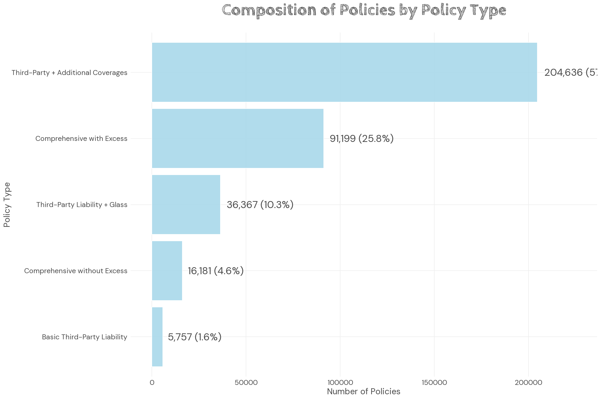
policy_distribution <- motor_clean %>% mutate(policy_type = recode(policy_type, "TP" = "Basic Third-Party Liability", "TPG" = "Third-Party Liability + Glass", "CC" = "Third-Party + Additional Coverages", "COMP_E" = "Comprehensive with Excess", "COMP_N" = "Comprehensive without Excess")) %>% count(policy_type, sort = TRUE) %>%
mutate(pct = n / sum(n))
ggplot(policy_distribution, aes(x = reorder(policy_type, n), y = n)) +
geom_col(fill = primary_color, color = "white", alpha = .9) +
geom_text(aes(label = paste0(comma(n)," (", percent(pct, accuracy = 0.1),")")), hjust = -0.1, size = 10, color = text_dark, family = "DM Sans") +
coord_flip() +
labs(title = "Composition of Policies by Policy Type", x = "Policy Type", y = "Number of Policies") +
expand_limits(y = max(policy_distribution$n) * 1.1) +
theme_va()Observation
- Third-Party + Additional Coverages (CC) dominates the portfolio, accounting for approximately 57.9% (204,636 policies) of all policies. This indicates that the portfolio is highly concentrated within a single product category.
- Comprehensive with Excess (COMP_E) represents the second-largest segment at 25.8% (91,199 policies), while Basic Third-Party Liability (TP) contributes only 1.6% (5,757 policies), making it the least common product.
- The strong concentration in CC and COMP_E policies suggests that policyholders generally prefer products offering broader coverage over basic liability-only protection.
- Since dominant policy categories contribute a larger share of portfolio exposure, subsequent analyses should examine whether these products also demonstrate higher claim frequency or loss ratios, as this may disproportionately influence overall portfolio performance.
Business Implication:
A highly concentrated portfolio increases dependence on the underwriting performance of a small number of products. If dominant products experience worsening claim behaviour or adverse loss ratios, the impact on overall portfolio profitability may be substantial. Understanding concentration therefore supports risk diversification and product strategy decisions.
4.2 Driver Age Distribution
This section examines the distribution of driver age to understand the demographic composition of policyholders within the portfolio. Age is an important characteristic because it may influence driving behaviour, risk exposure, and insurance product preferences.
A histogram was selected because driver age is a continuous numerical variable. Histograms effectively reveal concentration patterns, spread, skewness, and potential outliers within continuous distributions.
Coding Details
geom_histogram()groupsdriver_ageinto bins and displays the frequency distribution, helping identify common age ranges and overall spread of policyholders.bins = 30controls the number of intervals used to summarise the distribution.
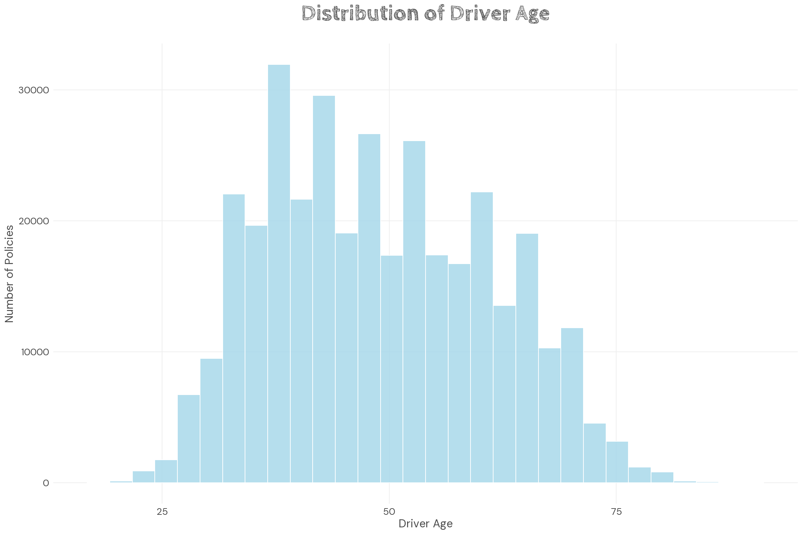
ggplot(motor_clean, aes(x = driver_age)) +
geom_histogram(bins = 30, fill = primary_color, color = "white", alpha = .85) +
labs(title = "Distribution of Driver Age", x = "Driver Age", y = "Number of Policies") +
theme_va()Observation
Driver ages appear concentrated between approximately 35 and 60 years, indicating that the portfolio is predominantly composed of middle-aged policyholders.
Very young drivers (below 25 years) and older drivers (above 70 years) represent a relatively small proportion of the portfolio, suggesting lower participation from these demographic groups.
The distribution is slightly right-skewed, with policy counts gradually decreasing at older ages. This indicates fewer policies among senior drivers.
The concentration of middle-aged policyholders suggests the portfolio may be dominated by drivers with longer driving experience and potentially more stable insurance purchasing behaviour.
Business implication:
Driver age is frequently incorporated into insurance pricing and risk segmentation models because claim behaviour and risk exposure may differ across demographic groups. A portfolio concentrated within middle-aged drivers may imply greater dependence on the claims performance of this segment.
4.3 Policy Status Composition Across Years
This section examines changes in policy status composition across years by comparing active and non-active policies. Analysing policy persistence provides insight into portfolio stability and potential retention patterns over time.
A 100% stacked bar chart was selected because it highlights proportional changes in policy status composition across years, allowing easier comparison between active and inactive segments regardless of total portfolio size.
Coding Details
if_else()groups policy statuses into simplified categories (“Active” and “Not Active”) for easier comparison across years.group_by(year)withmutate(pct = n / sum(n))calculates the percentage composition of each status group within each year.position_stack(vjust = .5)centres percentage labels within stacked bars, making proportions easier to interpret.scale_fill_manual()assigns custom colours to status groups, whilescale_y_continuous(labels = percent)formats the y-axis as percentages.
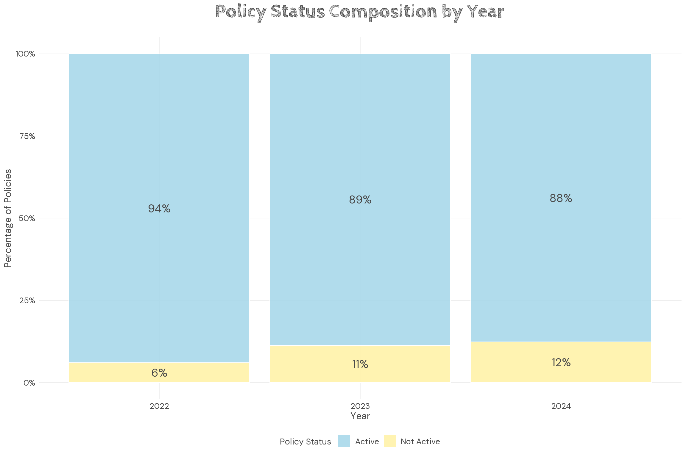
status_year_summary <- motor_clean %>% mutate(status_group = if_else(policy_status == "A", "Active", "Not Active")) %>% count(year, status_group) %>% group_by(year) %>% mutate(pct = n / sum(n)) %>% ungroup()
ggplot(status_year_summary, aes(x = factor(year), y = pct, fill = status_group)) +
geom_col(color = "white", alpha = .9) +
geom_text(aes(label = percent(pct, accuracy = 1)), position = position_stack(vjust = .5), color = text_dark, size = 10, family = "DM Sans") +
scale_fill_manual(values = c("Active" = primary_color, "Not Active" = secondary_color)) +
scale_y_continuous(labels = percent, limits = c(0,1)) +
labs(title = "Policy Status Composition by Year", x = "Year", y = "Percentage of Policies", fill = "Policy Status") +
theme_va()Observation
Active policies consistently dominate the portfolio, accounting for approximately 94% in 2022, 89% in 2023, and 88% in 2024, indicating that most policyholders maintain active coverage.
The proportion of non-active policies increases gradually from 6% (2022) to 12% (2024), suggesting a potential decline in policy retention over time.
Although active policies remain the majority, the upward trend in inactive status may indicate changing customer behaviour, increased policy cancellations, or shifts in portfolio composition.
The observed increase in inactive policies suggests that subsequent analyses should examine whether retention patterns differ across policy types, age groups, or claims behaviour.
Business Implication
Customer retention directly influences premium stability and customer lifetime value. A rising proportion of inactive policies may indicate increasing churn risk, emphasising the importance of identifying factors associated with long-term policy retention and customer persistence.
5 Exploratory Data Analysis
This section applies bivariate visual analytics techniques to investigate relationships between demographic characteristics, insurance products, claims behaviour, and profitability indicators. Findings support identification of factors potentially influencing portfolio profitability and volatility.
5.1 Claim Frequency by Policy Type Over Time
Claim frequency measures the average number of claims generated per unit of exposure and serves as an indicator of relative portfolio risk across policy types and years. Higher claim frequency generally suggests greater claim occurrence within a policy segment.
The metric is computed as:
Claim Frequency = Total Claims / Total Exposure
A line chart was selected because it effectively visualises temporal changes and enables comparison of claim frequency trends across multiple policy categories.
The analysis aggregates:
year→ x-axis (2022–2024)total_claims / total_exposure→ y-axis (claim frequency)policy_type→ colour grouping
This facilitates comparison of how claim behaviour evolves across insurance products over time.
Coding Details
geom_line()connects claim frequency values across years to highlight trends over time, whilegeom_point()emphasises individual observations for each policy type. The calculationtotal_claims / total_exposurerepresents claim frequency, measuring the number of claims relative to insured exposure.group = policy_typeensures separate trend lines are drawn for each policy type, andscale_color_manual()assigns custom colours to distinguish categories.filter(policy_type == "CC")subsets the dataset to only include policies under the “Third-Party + Additional Coverages” category. This allows claim frequency trends to be examined specifically for one policy type.geom_col()creates bars to compare claim frequency across years, whilegeom_text()adds labels showing the exact claim frequency values above each bar.
Show code
ggplot(
policy_year_metrics,
aes(
x = factor(year),
y = total_claims / total_exposure,
color = policy_type,
group = policy_type
)
) +
geom_line(linewidth = 1.2) +
geom_point(size = 5, stroke = 1) +
scale_color_manual(values = c(primary_color, secondary_color, third_color, fourth_color, fifth_color)) +
labs(title = "Claim Frequency by Policy Type", x = "Year", y = "Claim Frequency", color = "Policy Type") +
theme_va()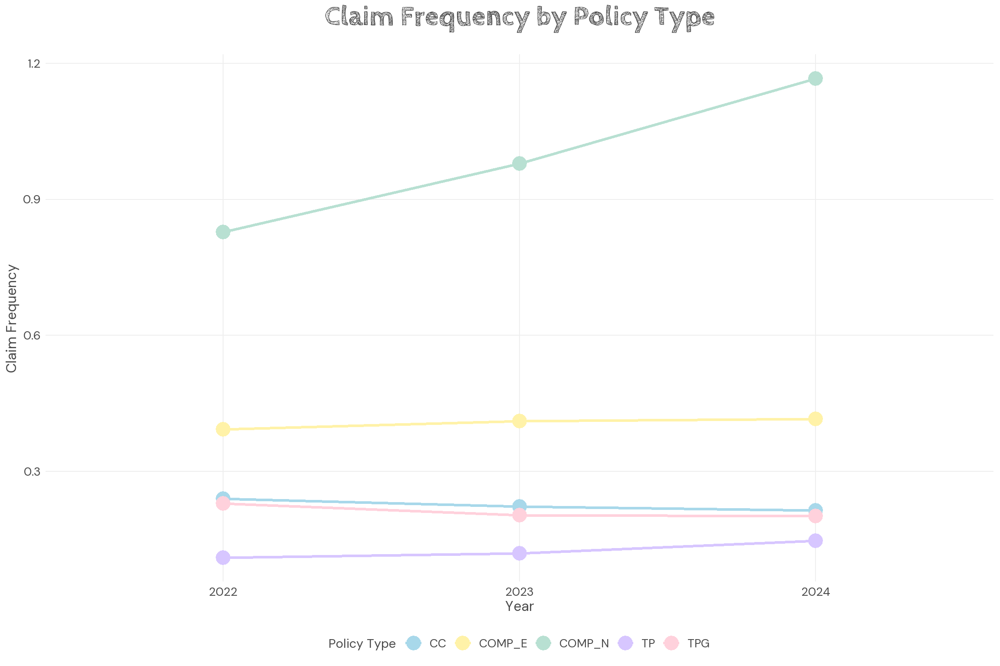
Show code
ggplot(
filter(policy_year_metrics, policy_type=="CC"),
aes(
x=factor(year),
y=total_claims/total_exposure,
fill=factor(year)
)
)+
geom_col(color = "white", alpha = .9) +
geom_text(aes(label = round(total_claims / total_exposure, 2)), vjust = -.3, size = 10, color = text_dark, family = "DM Sans") +
scale_fill_manual(values = c(primary_color, secondary_color, third_color)) +
labs(title = "Claim Frequency: Third-Party + Additional Coverages", x = "Year", y = "Claim Frequency") +
theme_va()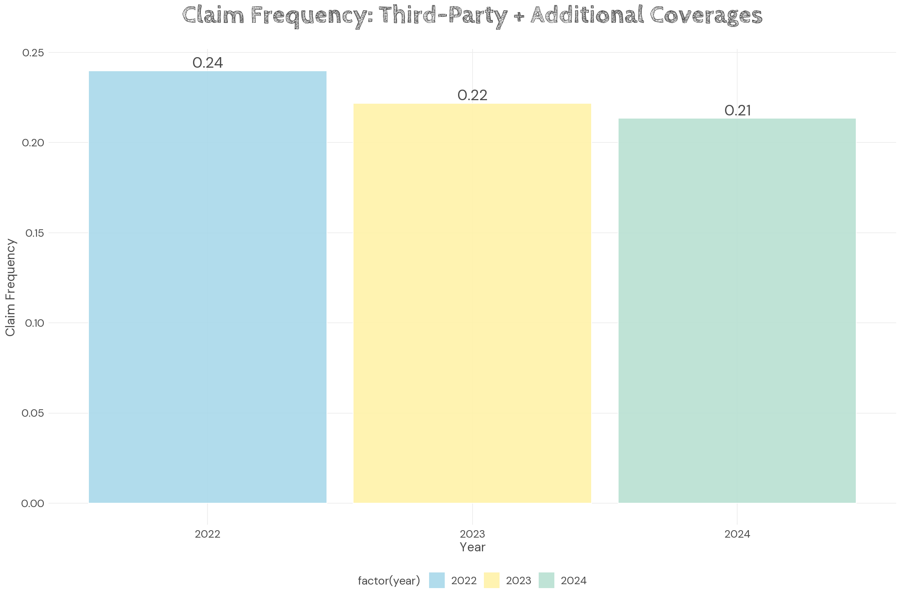
Show code
ggplot(
filter(policy_year_metrics, policy_type=="COMP_E"),
aes(
x=factor(year),
y=total_claims/total_exposure,
fill=factor(year)
)
)+
geom_col(color = "white", alpha = .9) +
geom_text(aes(label = round(total_claims / total_exposure, 2)), vjust = -.3, size = 10, color = text_dark, family = "DM Sans") +
scale_fill_manual(values = c(primary_color, secondary_color, third_color)) +
labs(title = "Claim Frequency: Comprehensive with Excess", x = "Year", y = "Claim Frequency") +
theme_va()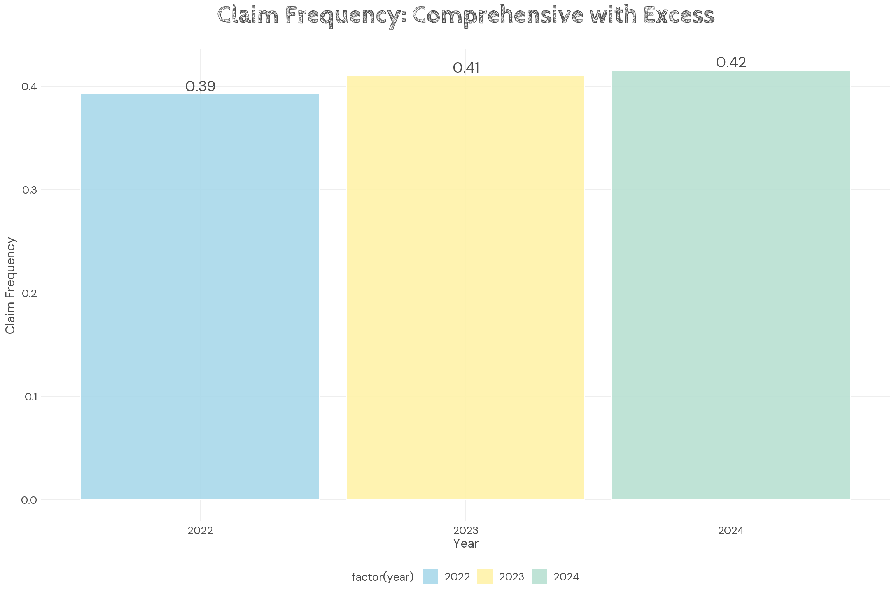
Show code
ggplot(
filter(policy_year_metrics, policy_type=="COMP_N"),
aes(
x=factor(year),
y=total_claims/total_exposure,
fill=factor(year)
)
)+
geom_col(color = "white", alpha = .9) +
geom_text(aes(label = round(total_claims / total_exposure, 2)), vjust = -.3, size = 10, color = text_dark, family = "DM Sans") +
scale_fill_manual(values = c(primary_color, secondary_color, third_color)) +
labs(title = "Claim Frequency: Comprehensive without Excess", x = "Year", y = "Claim Frequency") +
theme_va()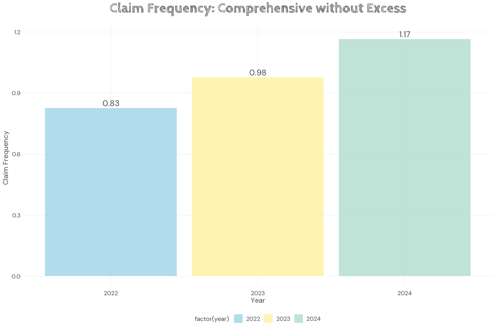
Show code
ggplot(
filter(policy_year_metrics, policy_type=="TP"),
aes(
x=factor(year),
y=total_claims/total_exposure,
fill=factor(year)
)
)+
geom_col(color = "white", alpha = .9) +
geom_text(aes(label = round(total_claims / total_exposure, 2)), vjust = -.3, size = 10, color = text_dark, family = "DM Sans") +
scale_fill_manual(values = c(primary_color, secondary_color, third_color)) +
labs(title = "Claim Frequency: Basic Third-Party Liability", x = "Year", y = "Claim Frequency") +
theme_va()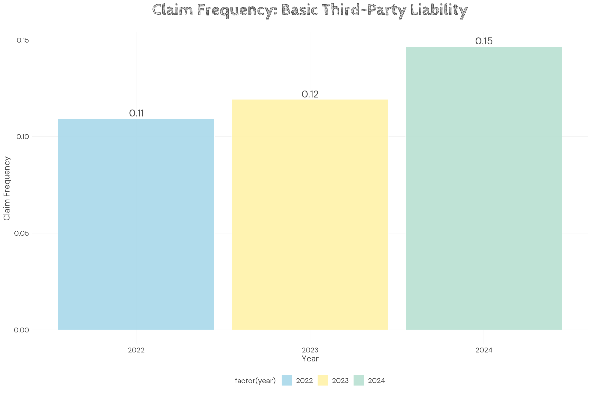
Show code
ggplot(
filter(policy_year_metrics, policy_type=="TPG"),
aes(
x=factor(year),
y=total_claims/total_exposure,
fill=factor(year)
)
)+
geom_col(color = "white", alpha = .9) +
geom_text(aes(label = round(total_claims / total_exposure, 2)), vjust = -.3, size = 10, color = text_dark, family = "DM Sans") +
scale_fill_manual(values = c(primary_color, secondary_color, third_color)) +
labs(title = "Claim Frequency: Third-Party Liability + Glass", x = "Year", y = "Claim Frequency") +
theme_va()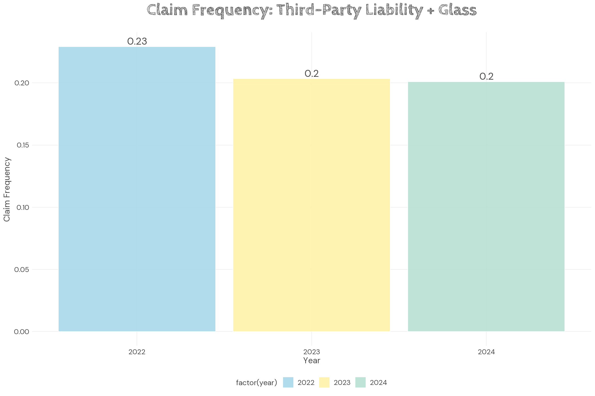
Observation
COMP_N (Comprehensive without excess) consistently records the highest claim frequency across all policy types, increasing from approximately 0.83 (2022) to 1.17 (2024). This indicates that policyholders under this product generate claims at a substantially higher rate than other segments, suggesting COMP_N represents the highest-risk policy category within the portfolio.
The upward trend in COMP_N claim frequency over time suggests worsening claims experience or increasing portfolio risk, warranting closer monitoring in subsequent profitability analyses.
COMP_E (Comprehensive with excess) exhibits moderate but relatively stable claim frequency (~0.39–0.41) across years. Compared to COMP_N, the presence of an excess requirement may contribute to lower claim occurrence.
CC (Third-Party + Additional Coverages) and TPG (Third-Party + Glass) maintain lower and relatively stable claim frequencies (~0.20–0.25), indicating more predictable claims behaviour over time.
TP (Basic Third-Party Liability) records the lowest claim frequency overall, despite a slight increase observed in 2024.
The substantial differences in claim frequency across products indicate that policy type is strongly associated with heterogeneous risk profiles, suggesting risk exposure is not evenly distributed across insurance offerings.
Business Implication
The persistently high and increasing claim frequency observed in COMP_N suggests this product may require premium repricing, stricter underwriting criteria, or refined risk segmentation strategies to manage deteriorating claims performance.
Products with relatively stable claim frequency may contribute to greater predictability in portfolio performance and underwriting outcomes.
Since high claim frequency does not necessarily imply poor profitability, subsequent analysis of loss ratios is required to determine whether elevated claims are sufficiently offset by premium levels.
5.2 Loss Ratio by Policy Type Over Time
Loss ratio evaluates underwriting profitability by measuring the proportion of collected premiums consumed by incurred claims. It is widely used to assess the financial performance of insurance products over time.
The metric is computed as:
Loss Ratio=Total IncurredTotal PremiumLoss Ratio=Loss Ratio=Total PremiumTotal Incurred
A line chart was selected because it effectively illustrates temporal trends and facilitates comparison of profitability across policy categories.
The visualisation compares:
year→ x-axis (2022–2024)total_incurred / total_premium→ y-axis (loss ratio)policy_type→ colour grouping
A loss ratio below 1 indicates collected premiums exceed incurred claims, suggesting underwriting profitability. Conversely, values above 1 imply claims costs exceed premium income and may indicate unprofitable products.
Show code
ggplot(
policy_year_metrics,
aes(
x=factor(year),
y=total_incurred/total_premium,
color=policy_type,
group=policy_type
)
)+
geom_line(linewidth = 1.2) +
geom_point(size = 5, stroke = 1) +
scale_color_manual(values = c(primary_color, secondary_color, third_color, fourth_color, fifth_color)) +
labs(title = "Loss Ratio by Policy Type", x = "Year", y = "Loss Ratio", color = "Policy Type") +
theme_va()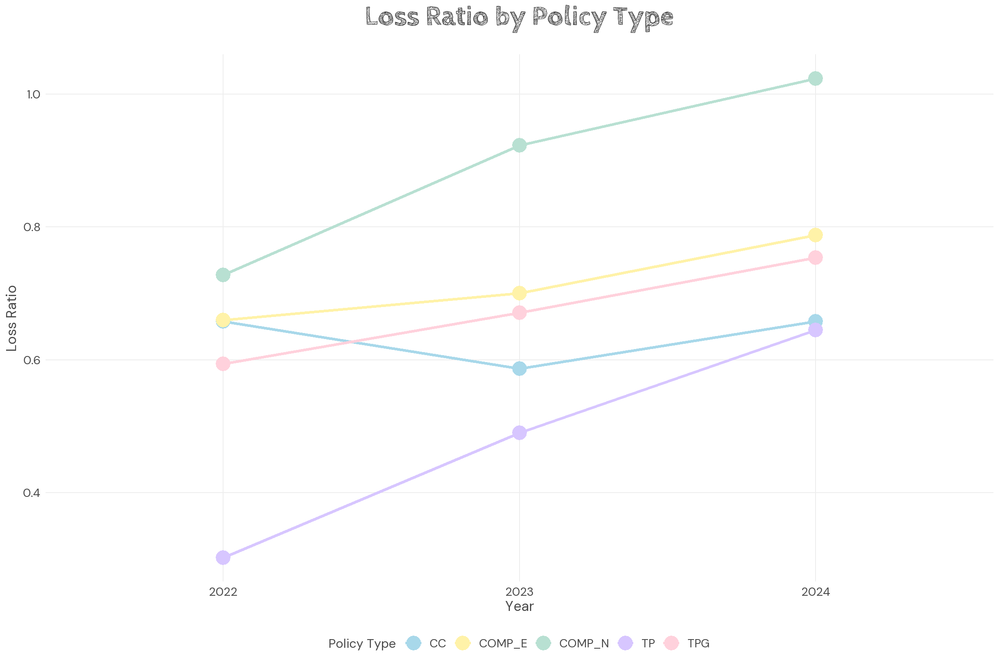
Show code
ggplot(
filter(
policy_year_metrics,
policy_type=="CC"
),
aes(x = factor(year),
y = total_incurred / total_premium,
fill = factor(year))
)+
geom_col(color = "white", alpha = .9) +
geom_text(aes(label = round(total_incurred / total_premium, 2)), vjust = -.3, size = 10, color = text_dark, family = "DM Sans") +
scale_fill_manual(values = c(primary_color, secondary_color, third_color)) +
labs(title = "Loss Ratio: Third-Party + Additional Coverages", x = "Year", y = "Loss Ratio") +
theme_va()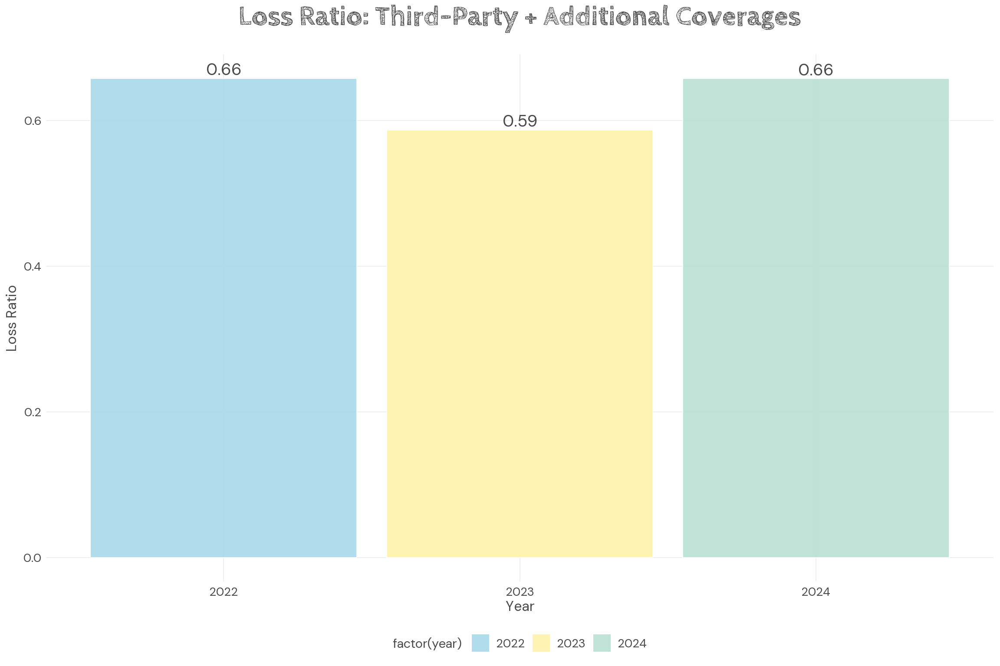
Show code
ggplot(
filter(
policy_year_metrics,
policy_type=="COMP_E"
),
aes(x = factor(year),
y = total_incurred / total_premium,
fill = factor(year))
)+
geom_col(color = "white", alpha = .9) +
geom_text(aes(label = round(total_incurred / total_premium, 2)), vjust = -.3, size = 10, color = text_dark, family = "DM Sans") +
scale_fill_manual(values = c(primary_color, secondary_color, third_color)) +
labs(title = "Loss Ratio: Comprehensive with Excess", x = "Year", y = "Loss Ratio") +
theme_va()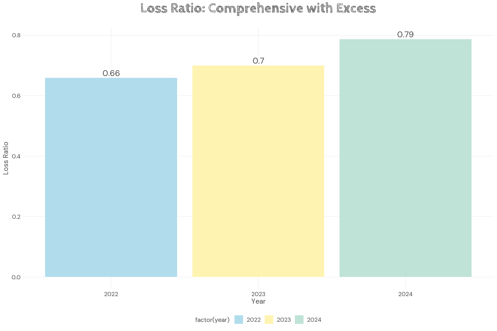
Show code
ggplot(
filter(
policy_year_metrics,
policy_type=="COMP_N"
),
aes(x = factor(year),
y = total_incurred / total_premium,
fill = factor(year))
)+
geom_col(color = "white", alpha = .9) +
geom_text(aes(label = round(total_incurred / total_premium, 2)), vjust = -.3, size = 10, color = text_dark, family = "DM Sans") +
scale_fill_manual(values = c(primary_color, secondary_color, third_color)) +
labs(title = "Loss Ratio: Comprehensive without Excess", x = "Year", y = "Loss Ratio") +
theme_va()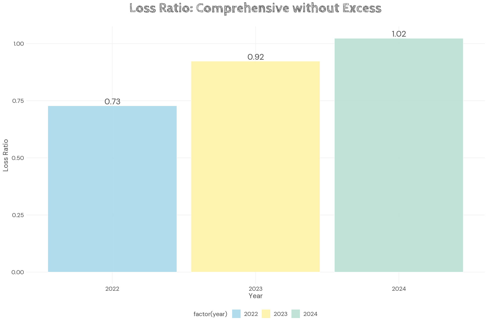
Show code
ggplot(
filter(
policy_year_metrics,
policy_type=="TP"
),
aes(x = factor(year),
y = total_incurred / total_premium,
fill = factor(year))
)+
geom_col(color = "white", alpha = .9) +
geom_text(aes(label = round(total_incurred / total_premium, 2)), vjust = -.3, size = 10, color = text_dark, family = "DM Sans") +
scale_fill_manual(values = c(primary_color, secondary_color, third_color)) +
labs(title = "Loss Ratio: Basic Third-Party Liability", x = "Year", y = "Loss Ratio") +
theme_va()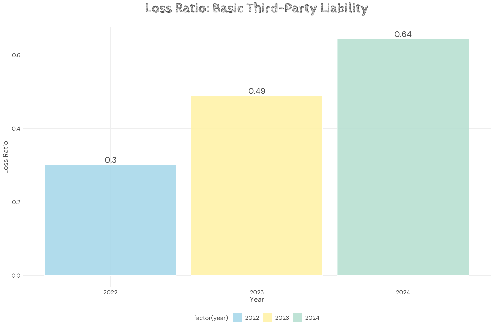
Show code
ggplot(
filter(
policy_year_metrics,
policy_type=="TPG"
),
aes(x = factor(year),
y = total_incurred / total_premium,
fill = factor(year))
)+
geom_col(color = "white", alpha = .9) +
geom_text(aes(label = round(total_incurred / total_premium, 2)), vjust = -.3, size = 10, color = text_dark, family = "DM Sans") +
scale_fill_manual(values = c(primary_color, secondary_color, third_color)) +
labs(title = "Loss Ratio: Third-Party Liability + Glass", x = "Year", y = "Loss Ratio") +
theme_va()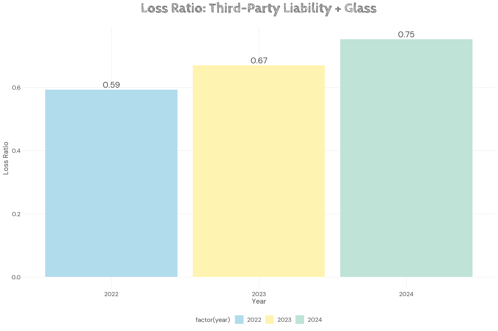
Observation
COMP_N (Comprehensive without excess) records the highest loss ratio across all policy types, increasing from approximately 0.73 (2022) to above 1.0 (2024). By 2024, incurred claims exceed collected premiums, indicating potential underwriting losses and suggesting COMP_N represents the highest-risk and least profitable product segment within the portfolio.
The worsening loss ratio observed in COMP_N aligns with previous findings showing the highest claim frequency, reinforcing evidence of deteriorating portfolio performance within this product category.
COMP_E (Comprehensive with excess) exhibits moderately high but increasing loss ratios (0.66 → 0.79). Although remaining below 1, the upward trend suggests declining underwriting profitability over time.
TPG (Third-Party + Glass) also demonstrates a gradual increase in loss ratio (0.59 → 0.75), indicating claims costs consume an increasing proportion of premium income.
TP (Basic Third-Party Liability) shows one of the strongest relative increases in loss ratio (0.30 → 0.64) despite maintaining comparatively low claim frequency in earlier analyses. This may suggest claims become more severe rather than more frequent.
CC (Third-Party + Additional Coverages) remains relatively stable (0.59–0.66), indicating more consistent profitability across years.
Business Implication:
The simultaneous increase in both claim frequency and loss ratio suggests COMP_N may require closer monitoring, revised pricing strategies, stricter underwriting criteria, or refined risk segmentation approaches.
The increasing loss ratio observed in TP indicates that low claim occurrence does not necessarily imply low financial risk, highlighting the importance of evaluating both claim frequency and claim severity.
Products with relatively stable loss ratios, such as CC, may contribute greater predictability to portfolio profitability.
The observed differences demonstrate that insurance products exhibit heterogeneous risk characteristics and therefore may require differentiated pricing and portfolio management strategies.
5.3 Claim Frequency and Loss Ratio by Policy Activity Status
This analysis compares claim frequency and loss ratio between active and non-active policies across 2022–2024. The data was transformed into long format using pivot_longer() to enable simultaneous comparison of both performance metrics within a single visualisation.
Grouped bar charts were selected because they facilitate direct comparison between claim occurrence and underwriting profitability within each year and policy status category.
Coding Details
pivot_longer()reshapes claim frequency and loss ratio into a single metric column, making it easier to compare multiple performance indicators within one chart.recode()renames metric labels into more readable terms for presentation.position_dodge()places bars and labels side-by-side instead of stacking them, allowing direct comparison between claim frequency and loss ratio across years.
Show code
status_metrics_long <- status_year_metrics %>%
mutate(claim_frequency = total_claims / total_exposure, loss_ratio = total_incurred / total_premium) %>%
select(year, status_group, claim_frequency, loss_ratio) %>%
pivot_longer(cols = c(claim_frequency, loss_ratio), names_to = "metric", values_to = "value") %>%
mutate(metric = recode(metric, "claim_frequency" = "Claim Frequency", "loss_ratio" = "Loss Ratio"))
ggplot(filter(status_metrics_long, status_group == "Active"), aes(x = factor(year), y = value, fill = metric)) +
geom_col(position = position_dodge(width = .75), width = .65, color = "white", alpha = .9) +
geom_text(aes(label = round(value, 2)), position = position_dodge(width = .75), vjust = -.3, size = 7, color = text_dark) +
scale_fill_manual(values = c("Claim Frequency" = primary_color, "Loss Ratio" = secondary_color)) +
labs(title = "Claim Frequency and Loss Ratio for Active Policies", x = "Year", y = "Metric Value", fill = "Metric") +
theme_va()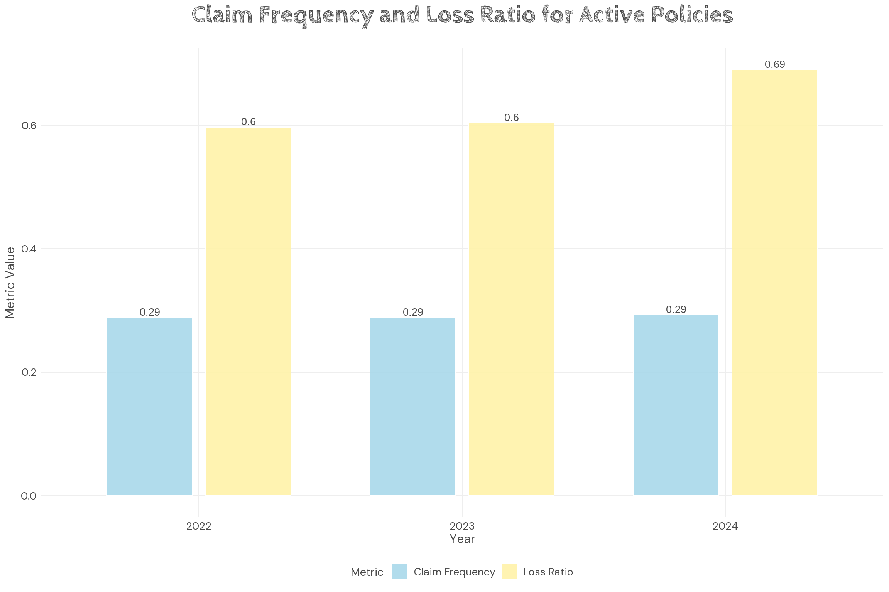
Show code
ggplot(filter(status_metrics_long, status_group == "Not Active"), aes(x = factor(year), y = value, fill = metric)) +
geom_col(position = position_dodge(width = .75), width = .65, color = "white", alpha = .9) +
geom_text(aes(label = round(value, 2)), position = position_dodge(width = .75), vjust = -.3, size = 7, color = text_dark) +
scale_fill_manual(values = c("Claim Frequency" = primary_color, "Loss Ratio" = secondary_color)) +
labs(title = "Claim Frequency and Loss Ratio for Not Active Policies", x = "Year", y = "Metric Value", fill = "Metric") +
theme_va()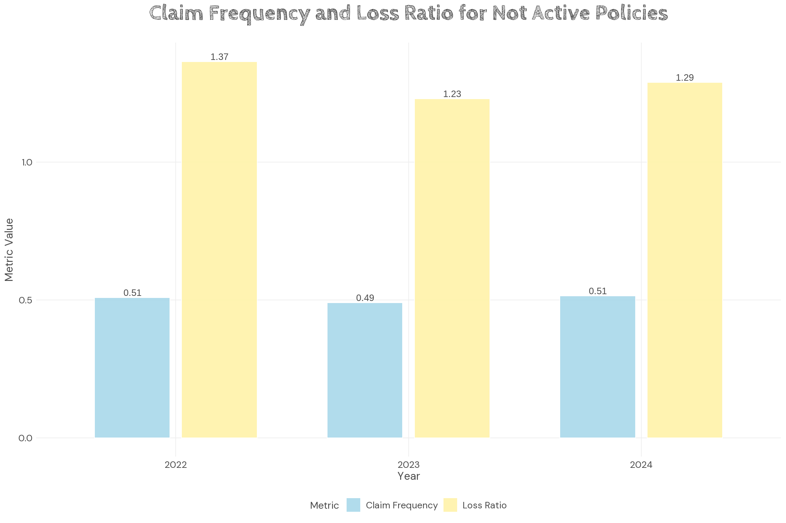
Observation
For active policies, claim frequency remains highly stable at approximately 0.29 across all years, suggesting relatively consistent claim occurrence among retained policyholders.
The loss ratio for active policies increases gradually from 0.60 (2022) to 0.69 (2024). Although remaining below 1, the upward trend indicates weakening underwriting profitability over time.
Not active policies exhibit substantially higher claim frequency (~0.49–0.51) compared to active policies, indicating claims occur more frequently within this segment.
The loss ratio for not active policies consistently exceeds 1.0, ranging between 1.23 and 1.37, suggesting incurred claims exceed collected premiums and indicating persistent underwriting losses.
The simultaneous presence of higher claim frequency and loss ratio among not active policies suggests this segment represents a higher-risk and less profitable group compared to active policies.
Business Implication:
The persistently elevated claim frequency and loss ratio observed among not active policies suggest these policies contribute disproportionately to portfolio risk and underwriting losses.
The findings may indicate that poorer claims experience is associated with increased policy cancellation or non-renewal behaviour, although further analysis is required to establish this relationship.
Investigating whether non-active policies share common characteristics, such as policy type, driver age, or vehicle profile, may support improved retention strategies and risk segmentation.
While active policies remain comparatively stable, the gradual increase in loss ratio suggests profitability should continue to be monitored over time.
5.4 Claims vs Incurred
A scatter plot with jitter was used to examine the relationship between total claims and total incurred amounts at the policy level.
The visualisation maps:
total_claims→ x-axis (number of claims)total_incurred→ y-axis (total incurred claim cost)
Jittering (geom_jitter()) was applied to reduce overplotting because insurance data often contains repeated claim counts concentrated around similar values. A smoothed trend line (geom_smooth()) was included to highlight the overall relationship between claim occurrence and incurred cost.
Additionally, logarithmic transformations were applied to both axes (scale_x_log10() and scale_y_log10()) because claim costs are highly right-skewed. Without transformation, extreme claim values would dominate the visualisation and obscure patterns among lower-cost observations.
Coding Details
geom_jitter()adds random variation to point positions to reduce overlap, making dense observations easier to visualise.geom_smooth()overlays a trend line to show the overall relationship between total claims and incurred amounts.scale_x_log10()andscale_y_log10()apply logarithmic scaling to both axes, improving visibility when values are highly skewed or span a wide range.
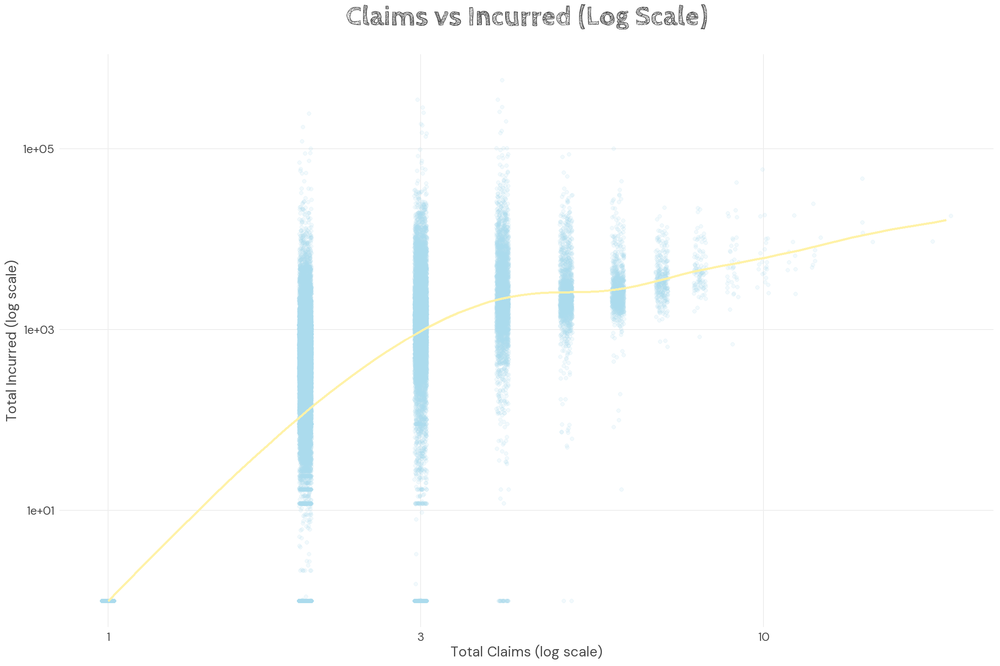
ggplot(
motor_clean,
aes(
x = total_claims + 1,
y = total_incurred + 1
)
)+
geom_jitter(
color = primary_color,
alpha = .15
)+
geom_smooth(
color = secondary_color,
se = FALSE
)+
scale_x_log10()+
scale_y_log10()+
labs(
title = "Claims vs Incurred (Log Scale)",
x = "Total Claims (log scale)",
y = "Total Incurred (log scale)"
)+
theme_va()Observation
The smoothed trend line indicates a positive relationship between claim count and incurred cost, suggesting policies with more claims generally generate higher losses.
The relationship is not strictly linear, as considerable variation in incurred amounts exists among policies with similar numbers of claims, particularly between 2 and 5 claims.
The substantial vertical dispersion suggests that claim severity differs considerably even when claim frequency is similar, indicating claim count alone does not fully explain incurred losses.
Several policies with relatively few claims exhibit exceptionally high incurred amounts, implying that infrequent but severe claims may contribute disproportionately to portfolio losses.
Multiple extreme outliers exceeding 100,000 monetary units are observed despite moderate claim counts, suggesting the presence of high-severity or catastrophic claim events.
The smoothed trend appears to flatten around 4–6 claims before increasing again, indicating increases in claim count do not always correspond proportionally to increases in incurred costs.
Business Implication:
The findings suggest that claim frequency alone is insufficient for evaluating portfolio risk, as claim severity introduces substantial variability in financial outcomes.
Policies associated with low-frequency but high-severity claims may generate significant underwriting risk despite relatively few claim events.
The presence of extreme incurred outliers suggests insurers may require targeted monitoring of high-severity segments, stronger underwriting controls, or reinsurance strategies to manage portfolio volatility.
Effective portfolio management should therefore consider both claim occurrence (frequency) and financial impact (severity) when assessing profitability and risk exposure.
5.5 Relationship Between Driver Age, Claim Frequency, and Loss Ratio
This animated visualisation examines how driver age distributions relate to claim frequency and loss ratio across selected policy types over time (2022–2024).
The analysis focuses on CC (Third-Party + Additional Coverages) and COMP_N (Comprehensive without Excess) to compare age-based risk patterns between a relatively stable product and a higher-risk segment identified in earlier analyses.
The visual combines:
Density curves (cloud) → distribution of policyholders by age
Rain/stem plots → mean risk metric (claim frequency or loss ratio) at each age
Animation (
transition_states()) → temporal changes across yearsFaceting → comparison across policy types and risk metrics
This layered approach allows simultaneous examination of demographic concentration, risk behaviour, and temporal evolution, which would be difficult to observe using static charts alone.
Extension:
The framework can be extended to other policy types (e.g., COMP_E, TP, TPG) by modifying the selected policy_type filter. This supports comparison of age-related risk patterns across different insurance products and enables broader portfolio segmentation analysis.
The animation cycles through yearly observations (2022–2024), allowing changes in age-related risk patterns to be observed over time.
Coding Details
is.finite()keeps only valid claim frequency and loss ratio values, removing infinite results that may occur from division issues.NA_real_ensures missing numeric values are stored consistently as numericNA.geom_density()creates the driver age density “cloud”, whileafter_stat()rescales the density values so they fit visually within the plot.geom_segment()andgeom_point()create the “rain” effect by showing scaled risk values below the age distribution.facet_grid(metric ~ policy_type)separates the visualisation by metric and policy type, whiletransition_states()animates the chart across years.
Show code
risk_profile <- motor_clean %>%
mutate(
claim_frequency = if_else(
total_exposure > 0,
total_claims / total_exposure,
NA_real_
),
loss_ratio = if_else(
total_premium > 0,
total_incurred / total_premium,
NA_real_
)
) %>%
filter(
policy_type %in% c("CC", "COMP_N"),
!is.na(year),
!is.na(driver_age),
is.finite(claim_frequency),
is.finite(loss_ratio)
) %>%
mutate(
policy_type = recode(
policy_type,
"CC" = "Third-Party + Additional Coverages",
"COMP_N" = "Comprehensive without Excess"
)
)
risk_metric <- risk_profile %>%
group_by(year, policy_type, driver_age) %>%
summarise(
loss_ratio = mean(loss_ratio, na.rm = TRUE),
claim_frequency = mean(claim_frequency, na.rm = TRUE),
.groups = "drop"
) %>%
pivot_longer(
cols = c(loss_ratio, claim_frequency),
names_to = "metric",
values_to = "value"
) %>%
group_by(year, policy_type, metric) %>%
mutate(
value_scaled = value / max(value, na.rm = TRUE) * 1.2
) %>%
ungroup() %>%
mutate(
metric = recode(
metric,
"loss_ratio" = "Loss Ratio",
"claim_frequency" = "Claim Frequency"
)
)
ggplot() +
geom_density(
data = risk_profile,
aes(
x = driver_age,
y = after_stat(density / max(density) * .8)
),
fill = secondary_color,
color = secondary_color,
alpha = .65,
adjust = 2
) +
geom_segment(
data = risk_metric,
aes(
x = driver_age,
xend = driver_age,
y = 0,
yend = -value_scaled,
color = metric
),
alpha = .45,
linewidth = .8
) +
geom_point(
data = risk_metric,
aes(
x = driver_age,
y = -value_scaled,
color = metric
),
size = 2.2,
alpha = .8
) +
scale_color_manual(
values = c(
"Claim Frequency" = primary_color,
"Loss Ratio" = fourth_color
)
) +
facet_grid(
metric ~ policy_type
) +
scale_y_continuous(
limits = c(-1.35, .9),
breaks = c(-1.2, 0, .8),
labels = c("Higher Risk", "0", "Age Density")
) +
labs(
title = "Age-Based Risk Profiles Across Selected Policy Types | Year: {closest_state}",
subtitle = "Cloud = Driver age density | Rain = Mean risk metric by age",
x = "Driver Age",
y = NULL,
color = "Metric"
) +
transition_states(
year,
transition_length = 2,
state_length = 5
) +
theme_va() +
theme(
legend.position = "none",
panel.grid.major.y = element_blank()
)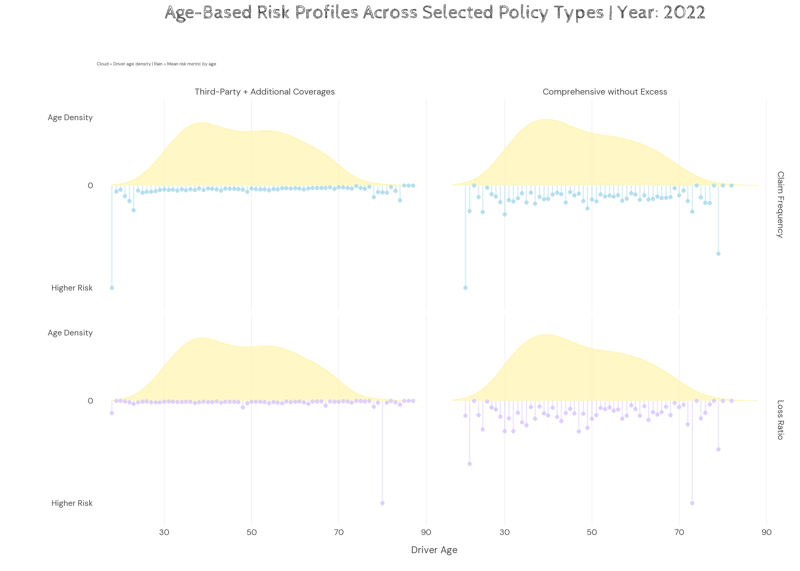
Observation
Across all years, policyholders are primarily concentrated between approximately 35–65 years, indicating that middle-aged drivers dominate both selected policy categories.
COMP_N (Comprehensive without excess) consistently exhibits higher claim frequency and loss ratio across multiple age groups compared to CC, reinforcing earlier findings that COMP_N represents the highest-risk product segment.
Elevated risk metrics in COMP_N persist despite similar age concentration patterns, suggesting that policy characteristics may influence risk beyond demographic composition alone.
Risk metrics vary across ages, indicating that driver age does not have a uniform relationship with claim behaviour or profitability.
The animation suggests that risk profiles evolve over time, particularly within COMP_N, where higher claim frequency and loss ratios become more pronounced across later years.
The coexistence of dense middle-aged populations and elevated risk metrics implies that high-volume demographic groups may contribute disproportionately to portfolio performance outcomes.
Business Implication
The persistence of elevated risk metrics across age groups within COMP_N suggests that product design or underwriting conditions may influence portfolio risk beyond age effects alone.
Age-based segmentation may improve pricing precision, but demographic characteristics should be evaluated together with policy type to avoid oversimplified risk assessment.
Since middle-aged drivers represent the largest proportion of policyholders, changes in claims behaviour within this demographic may have substantial implications for overall portfolio profitability.
Animated temporal analysis highlights how risk patterns evolve over time, supporting proactive monitoring of emerging high-risk segments.
6 Summary and Future Research
Our analysis of the motor insurance portfolio examined relationships between policy types, demographics, retention behaviour, claim frequency, incurred losses, and underwriting profitability. Overall, the findings revealed substantial heterogeneity in risk and profitability across products and customer segments, suggesting portfolio performance is associated with multiple interacting factors rather than a single characteristic.
6.1 Key Findings:
The portfolio is highly concentrated in Third-Party + Additional Coverages (CC), indicating that overall portfolio performance may be disproportionately influenced by a small number of dominant products.
Policyholders are primarily concentrated within middle-aged groups (approximately 35–60 years), suggesting this demographic contributes substantially to portfolio exposure.
The proportion of inactive policies increases over time, potentially indicating weakening customer retention and increasing churn risk.
COMP_N (Comprehensive without excess) consistently demonstrates the highest claim frequency and loss ratio, exceeding a loss ratio of 1.0 in 2024. This suggests the segment may have transitioned into an underwriting loss position, making it the highest-risk and least profitable product within the portfolio.
In contrast, CC (Third-Party + Additional Coverages) maintains comparatively stable claim frequency and loss ratios, indicating more predictable underwriting performance.
Policies with relatively few claims may still generate substantial incurred costs, suggesting claim severity is an important determinant of portfolio volatility alongside claim frequency.
Not active policies exhibit both higher claim frequency and higher loss ratios compared to active policies, indicating these segments may contribute disproportionately to portfolio risk and underwriting losses.
Age-based analyses suggest that risk behaviour evolves over time and differs across policy types, highlighting potential interactions between demographic characteristics and product-specific risk exposure.
Collectively, the findings suggest that policy type, retention behaviour, claim frequency, and claim severity are associated with differences in portfolio risk, profitability, and volatility. Products exhibiting persistently elevated claim frequency and loss ratios appear more vulnerable to deteriorating underwriting performance, while severe but infrequent claims may contribute disproportionately to portfolio volatility.
However, as the current analysis is exploratory in nature, these relationships should be interpreted as associations rather than confirmed causal influences. Additional statistical testing is required to determine whether observed patterns represent significant drivers of profitability and risk.
6.2 Recommendations for Future Research
Confirmatory and Statistical Analysis
The current study identifies patterns and associations between portfolio characteristics and insurance performance but does not establish causal relationships. Future research should incorporate statistical hypothesis testing and confirmatory analysis to determine whether variables such as policy type, retention status, claim frequency, age, and claim severity significantly influence profitability and portfolio volatility.
Potential approaches include:
ANOVA / t-tests → compare profitability and claims metrics across policy groups
Chi-square tests → assess relationships between categorical variables
Correlation analysis → quantify strength of associations between portfolio characteristics and risk measures
Regression modelling → identify statistically significant predictors of claim frequency, loss ratio, or profitability
Survival analysis → investigate factors associated with customer retention and policy cancellation behaviour
These methods would provide stronger evidence regarding whether observed relationships represent true drivers of profitability and volatility rather than coincidental patterns.
Customer Retention and Churn Analysis
The increasing proportion of inactive policies suggests potential deterioration in customer retention over time. Future studies should investigate whether claim frequency, loss ratios, demographics, or policy characteristics are associated with policy cancellation or non-renewal behaviour.
Understanding these relationships may support improved customer retention strategies, pricing decisions, and long-term portfolio stability.
Claim Severity and Extreme Loss Analysis
While claim frequency explains how often claims occur, portfolio profitability may also be influenced by high-severity but infrequent claims. Further analysis of extreme incurred losses and outlier events could improve understanding of catastrophic risks and support decisions relating to:
pricing strategies,
underwriting controls,
reinsurance arrangements,
portfolio volatility management.
Advanced Risk Segmentation
Future research should examine interactions between variables such as:
driver age,
policy type,
retention status,
claim frequency,
claim severity,
profitability indicators.
Multivariate approaches may reveal complex risk segments not observable through pairwise comparisons and support more precise pricing and underwriting strategies.
Longitudinal Portfolio Monitoring
Extending analysis beyond the 2022–2024 period would enable evaluation of longer-term changes in:
portfolio composition,
profitability,
customer behaviour,
claims experience,
retention patterns.
Longitudinal studies may reveal structural shifts in risk behaviour and improve the insurer’s ability to anticipate emerging trends.
Incorporating Additional Risk Factors
Future analyses could incorporate variables including:
vehicle characteristics,
geographic factors,
driving behaviour,
usage patterns,
external economic conditions,
which may influence claims experience but were not explored within the current scope. Including these variables may provide a more comprehensive understanding of portfolio risk determinants.
By extending analysis towards confirmatory testing, predictive modelling, and deeper risk segmentation, future research may provide stronger evidence regarding the factors driving insurance profitability and volatility, thereby supporting more targeted underwriting strategies and sustainable portfolio management decisions.
7 References
Kam, T. S. (2023). Visualising Distribution. R for Visual Analytics. https://r4va.netlify.app/chap09
Scherer, C. (2019). A ggplot2 Tutorial for Beautiful Plotting in R. Cedric Scherer. https://www.cedricscherer.com/2019/08/05/a-ggplot2-tutorial-for-beautiful-plotting-in-r/ (Useful for plot titles, labels, themes, fonts, spacing, annotations, and overall visual styling.)